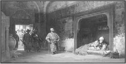

I. BAYEZİD (1360-1403)
“Dünyayı insanların hırsı yönetmektedir. Önemli olan, insanların, hırsını doğru işlerde kullanmalarıdır.”
İster dünya işlerine yoğunlaşsın, isterse din işlerine yoğunlaşsın; tüm insanlar için yukarıdaki ifade geçerlidir. Dünyayı idare eden şey, insanların sahip oldukları hırstır.
Dünya yönetiminde direkt söz sahibi olan insanların hırsı, eğer ki ilmî verilerle ve eğitimle yönlendirilecek olursa düzgün işler ortaya çıkar, aksi takdirde yanlış işler ortaya çıkmaktadır.
Hırsı, ilmî eğitimle törpülenmiş bir padişahtır I. Bayezid. Osmanlı padişahlarının dördüncüsü olan ve Yıldırım lakabıyla anılan I. Bayezid, 1360 tarihinde Edirne’de dünyaya gelmiştir. Babası I. Murad, annesi Gülçiçek Hatun’dur.
I. Bayezid’e, Kosova Savaşı’nda babasının öldürülmesi üzerine biat edilir ve taht’a geçer. Bu biat töreni biter bitmez, düşman peşindeki kardeşi Yakub Çelebi çağırtılarak, çadırda boğdurulur.
Bayezid, birçok seferler düzenlemiş ve savaşlarda gösterdiği çeviklik ve başarıdan dolayı Yıldırım lakabını kazanmıştır.
ANKARA SAVAŞI
Yıldırım Bayezid’in, Anadolu Beyliklerini bitirme safhasına getirmesi, bazı çevrelerce tedirginliğe yol açmıştır.
1398 yılında Karaman’a ve 1399 yılında Dulkadirli topraklarına girmesi, beylerin tedbirler almasına neden olmuştur. Bu tedbirlerden birisi de Hindistan seferinden dönen Timur’a sığınmak olmuştur. Timur’u, Yıldırım’a karşı kışkırtmışlardır.
Bu sırada Timur’dan kaçan Karakoyunlu ve Celayirli Beyleri de Yıldırım’a sığınmışlar ve bu büyük Osmanlı Sultanı’nı, Timur’a karşı kışkırtmaya başlamışlardır.
Timur’un ordusu Anadolu’da ilerlemeye başlamıştır. Ordunun Sivas’ı alması ve yağma yapması üzerine Yıldırım, ordusuyla harekete geçer.
Yıldırım, Çubuk Ovası’na geldiğinde Timur’un ordusunu dağınık bir vaziyette bulur. Vezirlerinin ve evlatlarının, “Bu fırsat kaçmaz, hemen saldıralım.” demelerine karşı Yıldırım Bayezid, bunu kabul etmemiş ve Timur’un ordusunun toplanmasını beklemiştir.
Daha önce Timur ile anlaşan Menteşeoğulları, Saruhanoğulları ve Germiyanoğulları, daha savaş başlamadan Timur’un ordusuna geçer. Bu, Osmanlı ordusunda büyük moral bozukluğuna neden olmuştur.
Yıldırım Bayezid’in büyük oğlunu, bir şey olursa taht’a çıksın, diye savaş alanından kaçırırlar. Bunu gören diğer oğlanları da savaş alanını bırakıp çekilirler.
10 bin askeri ile kalan Yıldırım, kahramanca savaşır, ama sonunda esir düşer.
Timur’un fetihnamesine göre, Ankara Savaşı’nın bitiminde Bayezid, bir gürz darbesiyle atından düşürülüp yakalanmış ve “Ben Sultan Bayezid’im. Beni sağ olarak hükümdarınıza götürünüz.” demesi üzerine, elleri bağlı olarak Timur’un çadırına götürülmüştür. Timur tarafından Bayezid’in iyi karşılandığı belirtilmiştir. Yıldırım’ın oğulları Mustafa Çelebi ve Musa Çelebi de aynı savaşta tutsak düşmüşlerdir. Timur ve askerleri, Bursa ve İznik’i ve sonra İzmir’i ele geçirmişler; talan edip yakıp yıkmışlardır. Timur, bu seferlerinde ve Anadolu’da bulunduğu sıralarda, Bayezid’i devamlı olarak yakınında tutup, ayrılmasına izin vermemiş. Bayezid’i kaçırmak için birkaç girişim ortaya çıkartılınca Bayezid ve eşi Sırp Prensesi Olivera’nın birlikte tutsak alınarak demir kafeste tutuldukları da söylenmiştir.
Savaş, Timur tarafından kazanılınca, sonrasında, Osmanlılar tarafından himaye edilen, bulundukları yörelerde yöneten konumundayken yönetilen konumuna düşen ve Anadolu’da bir zamanlar beylik olarak yer alan ailelere Timur, topraklarını iade edince, Osmanlı Devleti’nin Anadolu’da yürüttüğü himaye anlayışı bozulmuş ve devletin sınırlarının gerilemesine sebebiyet vermiştir.
I. Bayezid’in savaşta esir düşmesi ve tahttan uzak kalması, bir bakıma devletin yıkılma sürecine girmesine sebep olmuştur. Böylece; I. Bayezid, dolaylı yoldan da olsa tahttan inmiştir ve bu şekilde, Osmanlıların Anadolu’da yaşadıkları kaotik ortam, yani Fetret Devri dönemi başlamıştır.

Timur tarafından hapsedilen I. Bayezid (Çizen: Stanisław Chlebowski, 1878)
Yıldırım Bayezid, 8 Mart 1403’de, 43 yaşındayken Akşehir’de, nedeni tam olarak hâlâ bilinmeyen bir şekilde ölmüştür. İbn-i Arabşah, eceliyle öldüğünü yazar. Bazı kaynaklara göre; Timur’un beraberinde, Orta Asya’ya doğru Hazar Denizi kıyılarından geçerek götürülmek isteniyordu ve en yakınlarından uğradığı ihanete dayanamayan I. Bayezid, hastalandığı için bırakılarak tedavisi için geriye gönderildiyse de vefat etmiştir. Diğer kaynaklar; hastalığının, ilerleyen romatizma ve bronşit olduğunu bildirirler. Bizanslı tarihçi Dukas, kendini zehirlendiğini, diğerleri ise esaret altında intihar ettiğini de belirtmektedirler.
Yıldırım’ın naaşı, geçici olarak Akşehir’de, Seyyid Mahmud Hayrani’nin türbesine defnedilmiştir. Ancak Semerkant’a dönerken Timur’a kendisini beğendirmiş olan Musa Çelebi’ye, babası Yıldırım’ın naaşını Bursa’ya götürmesi emri verilmiştir. Bazı kaynaklar, cenaze Musa Çelebi tarafından Bursa’ya getirilmiş ve Yıldırım Camii yanındaki türbesine gömülmüştür, derken diğer kaynaklar ise, Musa Çelebi’nin, babasının naaşını mumyalanmış olarak Germiyanoğlu Yakup Bey’e, Kütahya’ya getirdiğini; burada sakladıktan sonra naaşın, 1404’de Çelebi Mehmed tarafından Bursa’ya getirilerek türbesine gömüldüğünü yazar.
EŞLERİ
1- Devlet Şah Hatun
2- Devlet Hatun
3- Hafsa Hatun
4- Sultan Hatun
5- Marya Olivera Despina Hatun
6- Maria Hatun
7- Angelina Hatun
ERKEK ÇOCUKLARI
1- Musa Çelebi
2- Süleyman Çelebi
3- Mustafa Çelebi
4- İsa Çelebi
5- Mehmed Çelebi
6- Ertuğrul Çelebi
7- Kasım Çelebi
8- Şehzade Musa
KIZ ÇOCUKLARI
1- Fatma Sultan